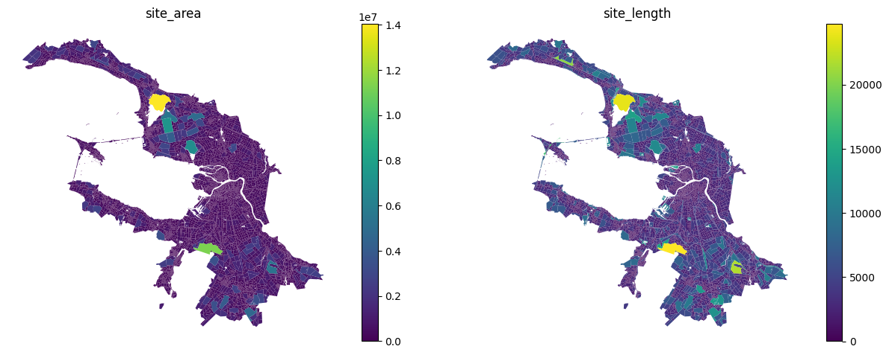
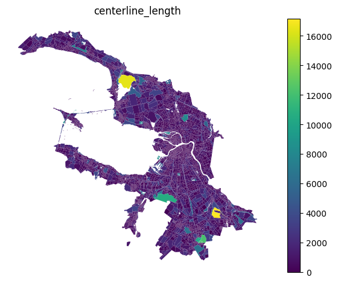
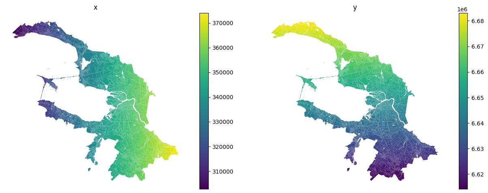
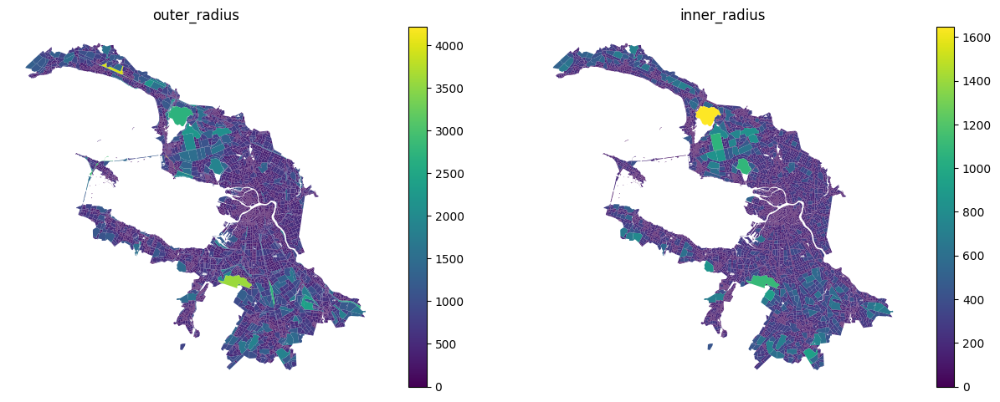

Geometry size
[1]:
import pandas as pd
blocks_gdf = pd.read_pickle('./../../data/saint_petersburg/blocks.pickle')
Utils
[2]:
import matplotlib.pyplot as plt
import geopandas as gpd
def plot(gdf: gpd.GeoDataFrame):
columns = [c for c in gdf.columns if c != 'geometry']
n = len(columns)
fig, axes = plt.subplots(1, n, figsize=(6.4*n, 4.8))
if n == 1:
axes = [axes]
for ax, col in zip(axes, columns):
gdf.plot(column=col, legend=True, ax=ax)
ax.set_title(col)
ax.set_axis_off()
plt.tight_layout()
plt.show()
Area and length
[3]:
from blocksnet.analysis.geometry.size import calculate_area_length
area_length_gdf = calculate_area_length(blocks_gdf)
area_length_gdf.head()
[3]:
| geometry | site_area | site_length | |
|---|---|---|---|
| 0 | POLYGON ((349424.859 6631180.891, 349424.751 6... | 0.032316 | 6.386234 |
| 1 | POLYGON ((352083.617 6633950.146, 352240.448 6... | 137101.088247 | 2193.855496 |
| 2 | POLYGON ((346700.642 6618453.176, 346681.107 6... | 95239.084434 | 1508.777966 |
| 3 | POLYGON ((347043.363 6618261.219, 347042.608 6... | 125919.330984 | 2248.336940 |
| 4 | POLYGON ((354879.039 6618859.116, 354845.405 6... | 169860.164494 | 2001.684796 |
[4]:
plot(area_length_gdf)

Centerlines
[5]:
from blocksnet.analysis.geometry.size import calculate_centerlines
centerlines_gdf = calculate_centerlines(blocks_gdf)
centerlines_gdf.head()
100%|██████████| 9533/9533 [00:20<00:00, 467.55it/s]
[5]:
| geometry | centerline_length | |
|---|---|---|
| 0 | POLYGON ((349424.859 6631180.891, 349424.751 6... | 0.420355 |
| 1 | POLYGON ((352083.617 6633950.146, 352240.448 6... | 608.992589 |
| 2 | POLYGON ((346700.642 6618453.176, 346681.107 6... | 462.121387 |
| 3 | POLYGON ((347043.363 6618261.219, 347042.608 6... | 913.262413 |
| 4 | POLYGON ((354879.039 6618859.116, 354845.405 6... | 659.375702 |
[6]:
plot(centerlines_gdf)

Centroids
[7]:
from blocksnet.analysis.geometry.size import calculate_centroids
centroids_gdf = calculate_centroids(blocks_gdf)
centroids_gdf.head()
[7]:
| geometry | x | y | |
|---|---|---|---|
| 0 | POLYGON ((349424.859 6631180.891, 349424.751 6... | 349423.315419 | 6.631181e+06 |
| 1 | POLYGON ((352083.617 6633950.146, 352240.448 6... | 351918.279458 | 6.633874e+06 |
| 2 | POLYGON ((346700.642 6618453.176, 346681.107 6... | 346828.961266 | 6.618483e+06 |
| 3 | POLYGON ((347043.363 6618261.219, 347042.608 6... | 347066.360124 | 6.618306e+06 |
| 4 | POLYGON ((354879.039 6618859.116, 354845.405 6... | 355059.964903 | 6.618810e+06 |
So obviously we get two beautiful gradients
[9]:
plot(centroids_gdf)

Radiuses
[11]:
from blocksnet.analysis.geometry.size import calculate_radiuses
radiuses_gdf = calculate_radiuses(blocks_gdf)
radiuses_gdf.head()
100%|██████████| 9533/9533 [00:00<00:00, 42059.87it/s]
100%|██████████| 9533/9533 [00:03<00:00, 2723.84it/s]
[11]:
| geometry | outer_radius | inner_radius | |
|---|---|---|---|
| 0 | POLYGON ((349424.859 6631180.891, 349424.751 6... | 1.596071 | 0.010049 |
| 1 | POLYGON ((352083.617 6633950.146, 352240.448 6... | 463.873510 | 108.748374 |
| 2 | POLYGON ((346700.642 6618453.176, 346681.107 6... | 251.353455 | 106.237627 |
| 3 | POLYGON ((347043.363 6618261.219, 347042.608 6... | 343.209085 | 109.514588 |
| 4 | POLYGON ((354879.039 6618859.116, 354845.405 6... | 350.224510 | 143.134306 |
[12]:
plot(radiuses_gdf)
